人形道祖神/大館市白沢付近
秋田県北部の大館市には濃密な人形道祖神文化が存在する。
その中でも特に大館市街の北、米代川の支流が細かく枝わかれした田園地帯の白沢付近にはわずか半径数キロの範囲にたくさんの人形道祖神があり、それぞれの集落の守護神として睨みをきかせている。
まずは下内川沿いの松原という集落の仁王様。村の奥の山神社の入口にある。
簡単な小屋に入っている仁王様は二体。いずれも3メートル近い巨体だ。
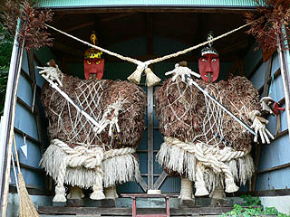 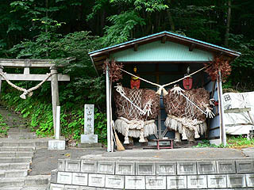
この白沢付近にある人形道祖神の特徴は頭が木製である、という事。
二体の仁王様のチョンマゲ状の髪はそれぞれ金、銀紙でデコレートされている。
あと目にも金紙銀紙が貼られている。鼻毛がチャームポイントですね。
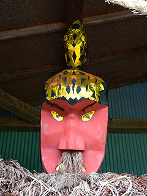 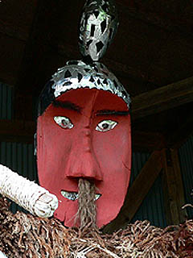
ボデー部は杉の葉、手はワラを編んだもの。杉の葉のモコモコした感じが仁王様のボリューム感にフィットしている。
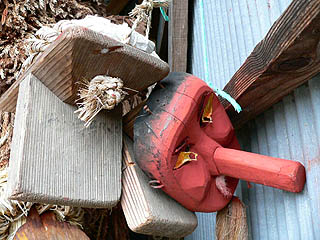
小屋の中には一本足の高下駄と天狗の面が掛けられていた。この人形道祖神の正体を特定するのは難しいが天狗もモチーフになっているのだろうか？
仁王、鬼、天狗、案山子、ナマハゲ、鍾馗様、地蔵、そんなものがデザインモチーフとなって生まれて来たのだろうか？
こちらは松原の南西にある清水川。
村の入口にある墓地の片隅に人形様と呼ばれる人形道祖神が小屋の中におさまっている。
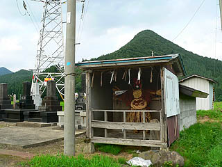 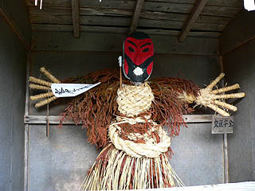
赤ら顔にヒゲの濃そうなお顔だち。ワラの胴体に杉の葉でデコレートした身体。右肩には塞神三柱神社という紙の旗を刺してある。
また両手には家内安全、交通安全の札が下がっている。
頭部は木製で平板から隅取りをしただけのシンプルな形状。でも側面に耳もちゃあんと描かれているところがポイント。
口にはご飯らしきものが付けられている。
六月、人形の化粧直しをする際に身体にキリタンポを刺し、御神酒を飲ませるそうなので、もしかしたらお口にしているのも秋田名物キリタンポの残骸かも。
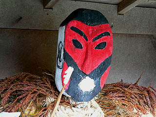 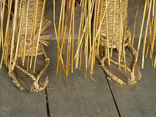
足元もしっかり草鞋履いてます。足袋のような足の造作がいいですね。
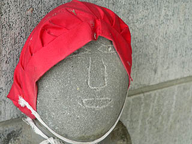
墓地にあったお地蔵さん。シンプルにも程があるぞ！
一方、清水川の村の逆サイドにも人形様がいる。
先程の赤ら顔の人形様が下（しも）の神で男神。でこちらは上（かみ）の神で女神だという。
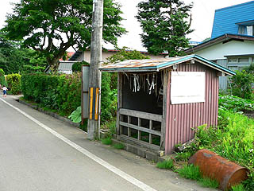 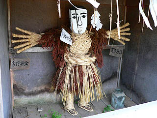
こちらには家内安全と豊年満作の札。そして塞神三柱神社という紙の旗もある。
顔以外の基本的なモチーフはほぼ下の神と一緒だったが顔面が割れているのが少し痛々しかった。
こちらは清水川から少し南にある中羽立集落。
集落の中央を通る街道の北の端にある人形様。背後は青々とした水田でまるで緑色の絨毯をひいたかのようだ。
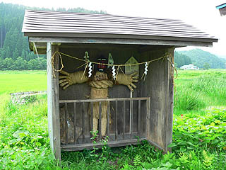 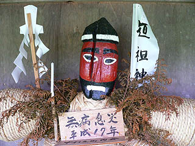
現在では集落の鎮守社にまとめて祀っているところも多いが、多くの人形道祖神は塞の神、道切り的な性格を持ったものだからあくまで村の上下の入口に設置するのが本来の姿なはずである。
ここの人形様も赤塗りの顔でブラックジャック状態。
立札によると中羽立の人形様は全部で三体あり、三体とも1991年に川崎に出張したことがあるという。
調べてみると川崎市民ミュージアムで「道祖神の源流」展が開催されていた。
疫病や悪者の水際での高い防御率が川崎市民ミュージアムの評価を得たのだろうか。
成田空港の入管にも是非導入していただきたい逸品である。
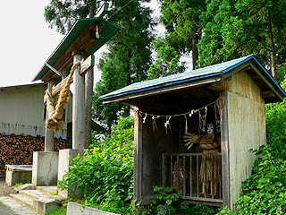 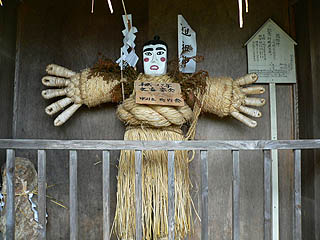
神社の入口いたのは白塗りなので女神なのだろう。
手が大き過ぎやしませんか？顔より太い腕、腕と同じ長さの指。凄いデフォルメだ。でもそこがイイ。
白沢付近全域に言える事だが、この赤塗りと白塗りの男女の神が村の上下に置かれているケースが多かった。
粕田の人形様
こちらも巨大な手がチャームポイント。
わざわざ説明書きが書かれているところを見ると、制作サイドも「この辺では全然珍しくないが全国的には特殊な行事なのかも」と思いつつやっている御様子。
お答えします。
類似の行事は数あれどここまで隣から隣へと殆どの集落に人形道祖神が存在しているのはとても珍しいです。
ついでにそのグローブみたいな手の造形はもっと珍しいです。
集落の上にいるのはは女神。白塗りの顔に目が黒ブチ。パンダみたいになっちゃってます。
上半身はムシロで覆われているのが特徴的だ。
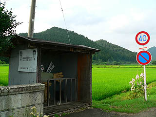 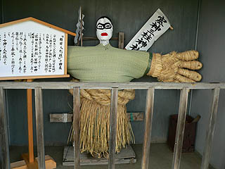
下には黒と赤と白で構成された男神が。こっちはプロレスのマスクマンみたいですね。
必殺技は16文チョップとお見受け致しましたが、如何。
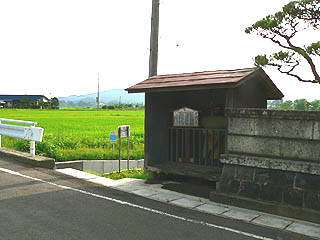 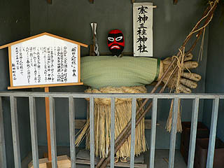
大森の人形。
大森の集落の神社の境内に三体まとめて祀られている。恐らくかつては集落の上中下に置かれていたのだろう。
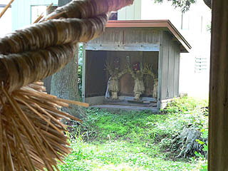 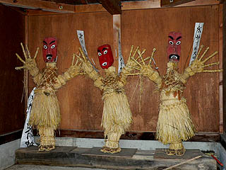
チョットひねり気味の腰付きに躍動感が見え隠れ。何だかポリンキーのCMみたいだ。
「人形道祖神」によると三体はジサマとアニとアネだということだがどれがどれやら。
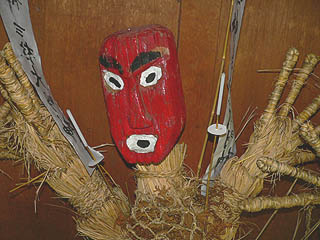 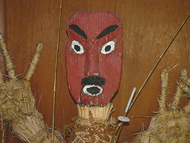
左が唯一ヒゲが生えていないのでアネなのだろう。右がヒゲが小さいのでアニなのだろうか。
この三体からは村に悪いモノを入れないようにしよう、という使命感のようなものが全く感じられない。
他の集落の人形道祖神が人々を驚かせるために「異形」を装っているのに対して、ここのは何だかお笑いトリオみたいだ。
それだけに逆に印象深かった。
長面袋の人形様。
身体全体がムシロで覆われているので四角っぽい。体中に願い事を満載しながら村に入って来る不審者（それは私の事です）を見張っている。
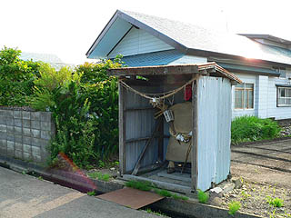 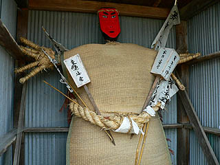
顔の化粧はペンキなのだろうか。テカテカしてます。足元を見てビックリ。ちゃあんと足の指が作られてました。
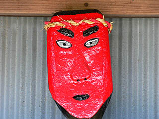 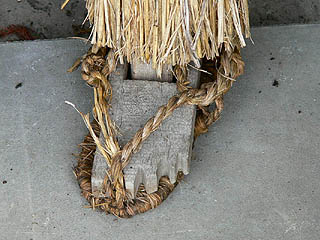
こちらは下の人形様。こちらも顔がテカってます。
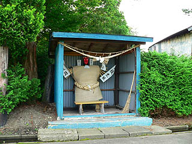 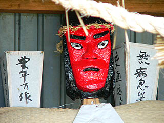
二井山の仁王様。
集落の奥の神社の境内にある仁王様。ひとつの小屋に男女二体の人形がいた。
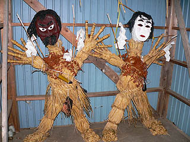
・・・こっ、恐い。
黒すぎる男神と白すぎる女神。異様に長い首、レイザーラモンみたいなポーズ、全てにおいて異形の人形だ。
特に恐いのは女神の表情のない顔。異様に白い顔。夜道の曲り角で鈴木そ○子に会ったような気分である。
体中に幣束や蝋燭をまとっている。また、女神の腰に大きなお財布が下がっていたのが可笑しかった。男神は刀と巾着。
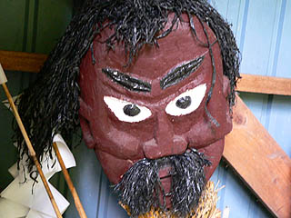 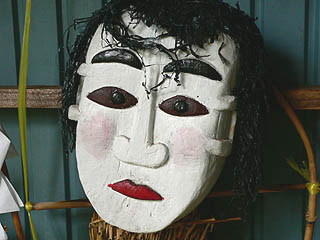
髪や髭は海藻だろうか。乱れ髪っぽい感じが恐さ倍増。
人気のない神社の境内で独り人形の表情のない顔をじーっっと見ていたら何だか動きだしそうな気がしてきて・・・
ガサガサッ！ギャ−！
あっ・・・散歩中のお婆ちゃんでしたか。「何故こんな人形をわざわざ写真に撮るんだ？」という顔をしてました。
しばらく話をしたのだが何度も「ふ〜ん、そんなに珍しいのかねえ」と仰っていた。
ハイ、珍しいです。
花岡鉱山跡近くの新姥沢にある人形様。岐美二柱神社の境内にあった
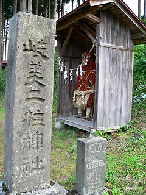 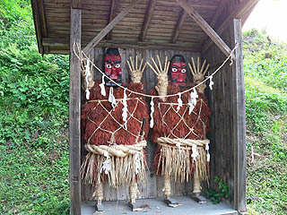
小さな小屋にビッチリ詰まった二体の人形様。
スペースの関係なのか、人形道祖神のお約束の通せんぼポーズさえもままならない御様子。
二人揃って「降参〜！」ってな具合になっちゃっているぞ。
さて。
今まではワラの胴体＋木製の頭部という組み合わせの人形道祖神を見て来たが、それ以外の人形道祖神もある。
これは元々ワラで人形を作っていたのが、何らかの理由で全身が木で作られた例だ。
本郷の神明社の境内にあった小屋。高さからして山車小屋か何かと思ったら・・・
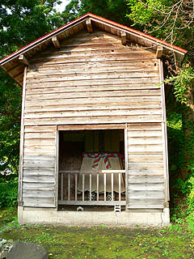
おおおっとお！中に凄い人がいました。
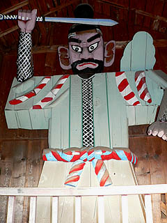 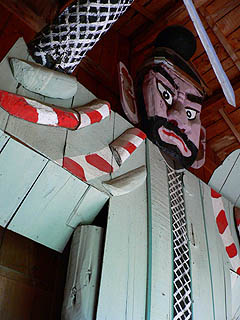
この大人形、ショウキ様と呼ばれている。
忍者のようなクサリカタビラ、紅白のタスキと帯、パステルグリーンの胴体、剣を振り上げたポーズ。
すべてにおいて従来の人形道祖神と一線を画する巨大人形だ。大きさは4メートル以上、威圧感ムンムンの堂々たる姿である。
胴体や腕の部分が板を張り合わせて作っているので全体的にカクカクしている。
しかも大きさの割には奥行きが凄く薄い。正面から見ると勇ましいが真横から見ると自立しているのがやっと、という塩梅。
「巨大なのに稚拙」・・・私のもっとも好きな組み合わせである。
おつくり魂に技術が着いていかないこのショウキ様。
「多少無茶しても大きなモノを作りたい」という気概にあふれていて見ているこちらも「良くやった！」という気分になってくる。
この地区も明治30年頃まではワラ人形を作っていたという。ということはそれ以降に作られたという事だろう。人形道祖神の大傑作である。
同じく本郷の根井神社。
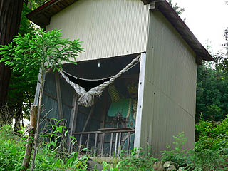 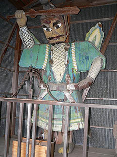
神社の本殿に至る石段の途中に巨大な木製のショウキ様が納まっていた。
こちらは先程の神明社のショウキ様に比べるとカクカクした堅さもとれて若干リラックスムード。
でも剣を振り上げて疫病や悪者から村を守る守護神のスタンスは崩していない。
そういえばこの2体のショウキ様、肩の後ろに何か雲形のようなモノが付いている。一体なんなんだろう？
写真や絵を色々見てみたのだが、こんな翼を背負ってる鍾馗様など無かった。もしかして翼？
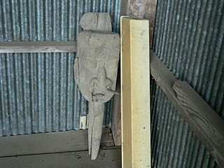
ショウキ様の足元に置かれていた木製の頭部。恐らく明治30年以前に作っていた人形道祖神の頭部なのだろう。
根井神社にはもうひとつ大人形が存在する。
先程のショウキ様の石段を挟んだ逆サイドにいらっしゃる大人形。こちらも4メートル近くの大きさだ。
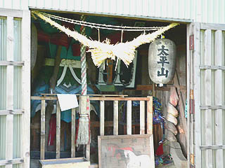
上記二体のショウキ様とは基本的なデザインは違う。むしろこっちの方が鍾馗様のイメージに近いような気もする。
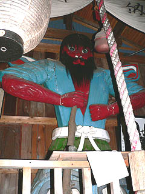 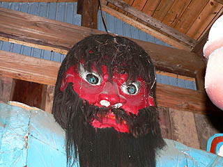
手に持つ長い棒は棍棒なのか杖なのだろうか。赤い身体に水色の着物、毛はもしかして人毛？
こちらもお隣のショウキ様に負けず劣らずインパクト大。そしてやっぱり薄い。
これらの全身木製の大人形は元々ワラの身体の人形道祖神が変化した形と考えられる。
その理由には毎年ワラで作るのが面倒臭い、一年中祭っておくなら耐久性のある材料で人形をつくりたい、など色々考えられる。
しかし、やっぱり基本にあるのは「他の地区に負けない位大きな人形をつくってやろう！」というおつくりチャレンジャー精神ではなかろうか。
次の人形道祖神にGO!
人形道祖神に戻る
珍寺大道場 HOME